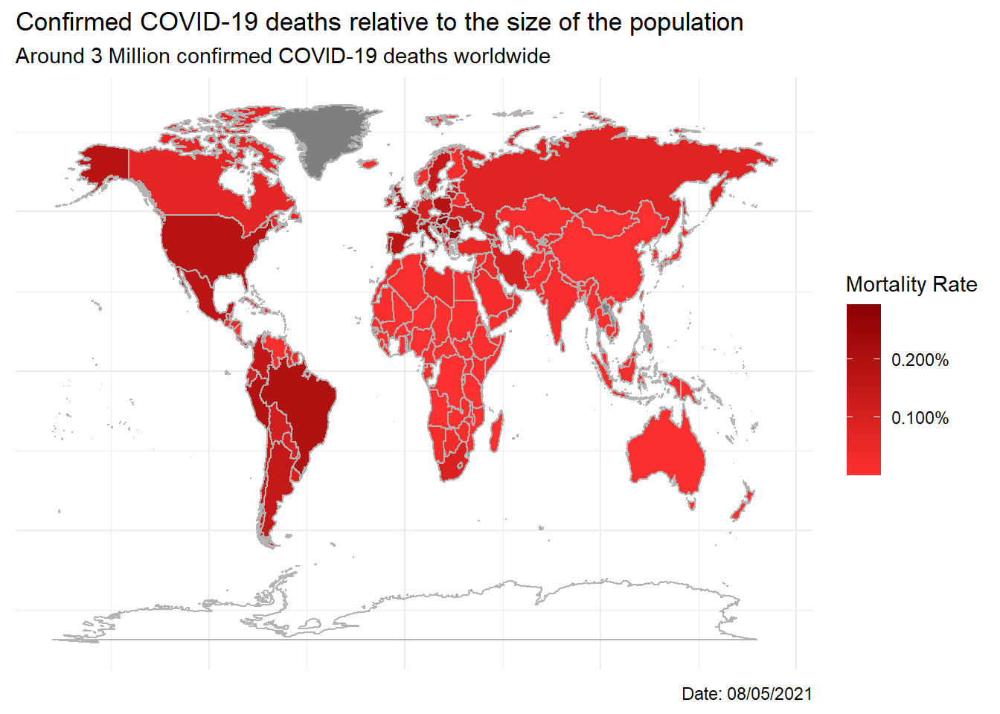

04 Data Visualization
Vignesh Venkatachalam
2021-05
1 Data Visualization
1.0.1 Load libraries
library(tidyverse)
library(ggthemes)
library(ggrepel)
library(lubridate)
library(maps)1.1 Challenge 1: Cumulative Cases
1.1.1 Cumulative Cases Data Wrangling
I have decided not to add data for Europe and only add data by countries.
covid_data_tbl <- read_csv("https://covid.ourworldindata.org/data/owid-covid-data.csv") %>%
select(location, date, total_cases) %>%
# Choosing data for 6 countries
filter(location == "Germany" | location == "United Kingdom" | location == "France" |
location == "Spain" | location == "United States" | location == "India") %>%
# Format cases data to decimal format
mutate(cases_format = scales::dollar(total_cases, big.mark = ".",
decimal.mark = ",",
prefix = "",
suffix = ""))1.1.2 Plot Cumulative Cases
The time course of cumulative cases is plotted below.
covid_data_tbl %>%
ggplot(aes(x = date, y = total_cases, color = location)) +
geom_line(size = 1) +
# Used the ggrepel package to avoid data labels from overlapping
geom_label_repel(aes(x = date, y = total_cases, label = cases_format, fill = location),
vjust = 0.7,
hjust = 1.2,
color = "white",
box.padding = 0.0,
min.segment.length = 0,
segment.color = "grey50",
data = covid_data_tbl %>% slice(which.max(total_cases))) +
# Removing unnecessary legend data
guides(fill = FALSE) +
expand_limits(y = 0) +
scale_color_brewer(palette = "Dark2") +
scale_y_continuous(labels = scales::dollar_format(scale = 1e-6,
prefix = "",
suffix = " M")) +
scale_x_date(date_labels = "%B '%y",
date_breaks = "1 month",
expand = c(0, NA)) +
# Labels
labs(
title = "COVID-19 confirmed cases worldwide",
subtitle = "As of 08/05/2021",
x = "",
y = "Cumulative Cases",
color = "Country"
) +
# Themes
theme_minimal() +
theme(
legend.position = "bottom",
axis.title = element_text(face = "bold"),
axis.text.x = element_text(angle = 45, hjust = 1.0)
)
1.2 Challenge 2: Mortality Rate
1.2.1 Mortality Rate Data Wrangling
covid_data_tbl <- read_csv("https://covid.ourworldindata.org/data/owid-covid-data.csv") %>%
mutate(mortality_rate = total_deaths / population) %>%
# Getting the last mortality rate to plot
group_by(location) %>%
summarise(latest_mort_rate = last(mortality_rate)) %>%
select(location, latest_mort_rate) %>%
# Taking care of inconsistencies in country names
mutate(location = case_when(
location == "United Kingdom" ~ "UK",
location == "United States" ~ "USA",
location == "Democratic Republic of Congo" ~ "Democratic Republic of the Congo",
TRUE ~ location
)) %>%
distinct()
# Map data from the map package
world <- map_data("world")
covid_map <- merge(x = world, y = covid_data_tbl, by.x = "region", by.y = "location") %>%
select(region, long, lat, latest_mort_rate)1.2.2 Heat Map of Mortality Rate
The heat map of the mortality rates for the world is plotted below.
covid_map %>%
ggplot() +
geom_map(aes(x = long, y = lat, map_id = region, fill = latest_mort_rate), map = world) +
# Add border lines for the countries
borders("world", colour = "grey70") +
# Colour gradient for heat map
scale_fill_continuous(labels = scales::percent_format(accuracy = 0.001),
low = "firebrick1",
high = "darkred") +
# Labels
labs(
title = "Confirmed COVID-19 deaths relative to the size of the population",
subtitle = "Around 3 Million confirmed COVID-19 deaths worldwide",
caption = "Date: 08/05/2021",
fill = "Mortality Rate"
) +
# Themes
theme_minimal() +
theme(
axis.line = element_blank(),
axis.text = element_blank(),
axis.ticks = element_blank(),
axis.title = element_blank(),
title = element_text(color = "black"),
legend.position = "right"
)